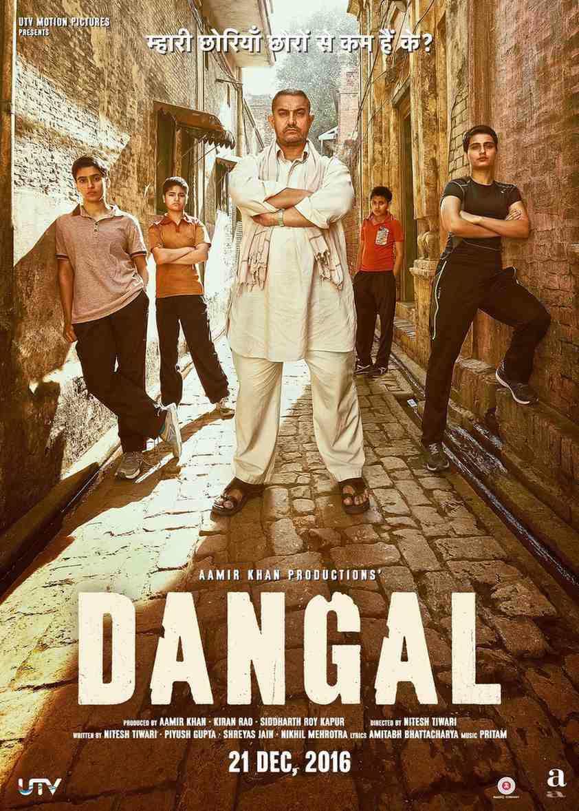
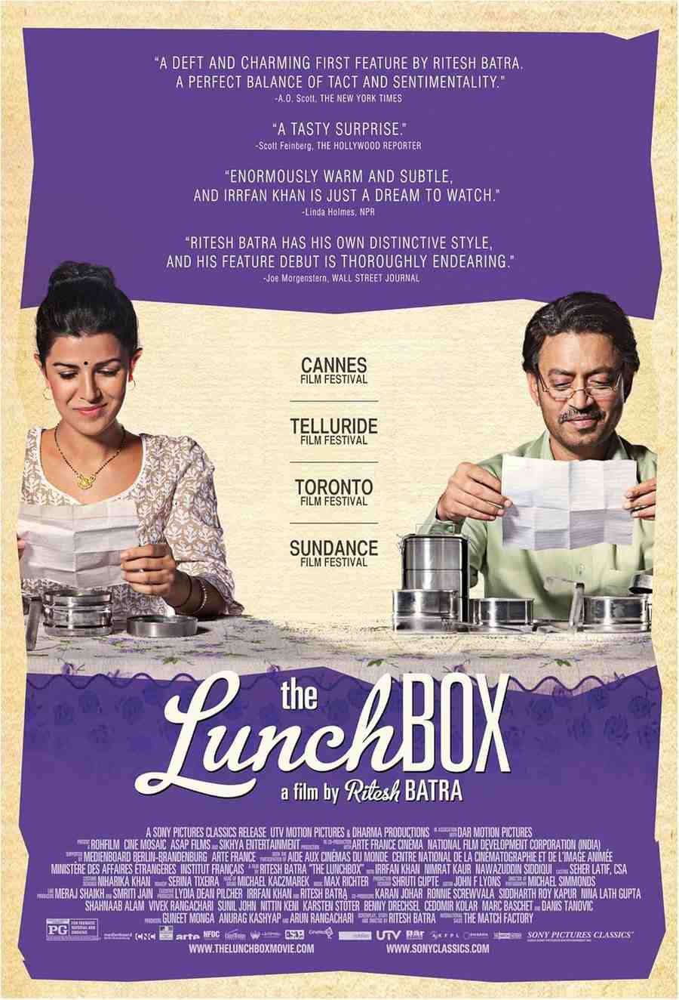
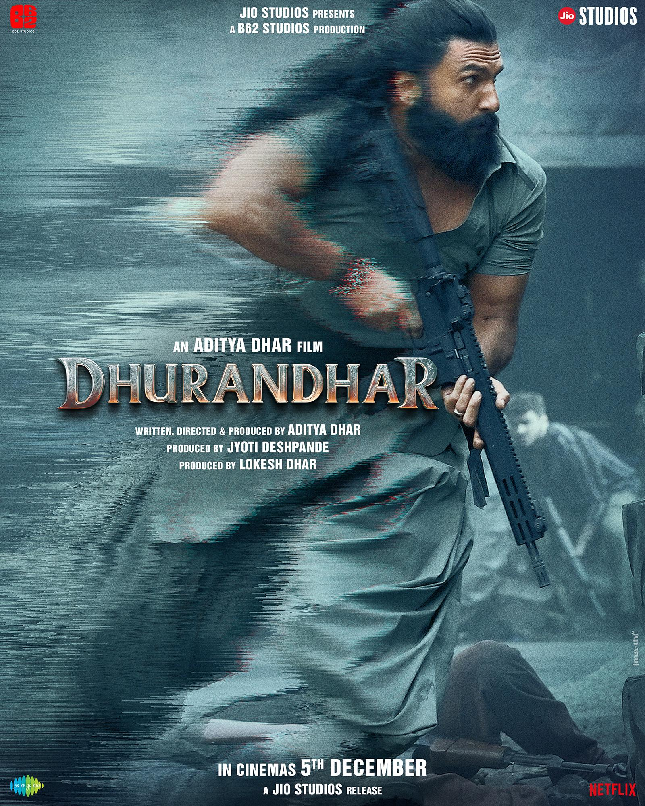

Why people get it wrong
Indian cinema carries a strange burden. It is one of the oldest film industries in the world, one of the most productive, and one of the most watched. Still, it often gets talked about like it’s a novelty. Outside India, it is rarely approached with real curiosity. Instead, it gets reduced to a few labels: loud, long, emotional, unrealistic, musical.
Mention Indian films in a global conversation and the response is usually predictable. Someone brings up slow-motion action clips that went viral. Someone jokes about people dancing in the middle of a serious scene. Someone shrugs and treats the whole thing like a meme, as if a billion-plus people somehow never learned how to tell stories properly.
What makes this misunderstanding annoying is not that criticism exists. Criticism is fine. The problem is how the criticism is built. It’s usually built from fragments: clips without context, scenes without setup, moments removed from what the film is trying to do. Indian cinema gets judged by what escapes its frame, not by what actually lives inside it.
At the same time, this doesn’t mean Indian cinema should be protected from critique like it’s fragile. It’s a huge ecosystem, and like any huge ecosystem it has weak writing, lazy trends, overdone formulas, and films that deserve pushback. But there’s a big difference between critique and dismissal. Critique watches the full film and talks honestly. Dismissal watches five seconds and decides it has seen enough.
If you want to understand why the perception exists, and why it keeps coming back, you have to look at what Indian cinema actually is, not what travels the fastest online.
Viral clips changed the conversation
Indian films didn’t suddenly become exaggerated because of social media. Scale, emotion, heightened drama, and big gestures have always existed across many Indian industries, in different proportions and for different reasons. What changed is what the internet chose to export.
Short-form platforms reward shock value. A gravity-defying punch is more shareable than a quiet conversation. A “mass” entry moment gets clipped more often than a two-minute scene about grief, guilt, or moral doubt. Over time, those fragments begin to stand in for the whole industry. It’s not that Indian cinema is only spectacle. It’s that spectacle survives the algorithm better than subtlety does.
This creates fake confidence in people who have never watched a full Indian film. They feel like they have “seen enough.” In reality, they have seen seconds. And because those seconds often come from the loudest corners of commercial cinema, the conclusion becomes automatic: “That’s how Indian movies are.”
Here’s where it gets important: spectacle itself isn’t the enemy. When it’s done well, it’s a strength. It’s a style, and it’s a choice. RRR is a clean example. It’s big, dramatic, and unapologetically larger than life. But it’s also carefully designed, emotionally clear, and fully committed to its world. The same things people call “too much” become the reason it works, because the filmmaking is confident and the emotions are earned. That’s the point: the features people mock can become a plus point when the craft matches the ambition.
The real mistake is assuming this is the only mode Indian cinema knows. It isn’t. Indian cinema is not one industry. It’s an ecosystem: multiple languages, multiple traditions, multiple audiences, and completely different storytelling rules depending on where you’re looking. Viral clips flatten all of that into one stereotype. Then people stop searching, and the stereotype stays alive.
Why the action looks “too much”
Indian action cinema often gets mocked for ignoring physics. That criticism isn’t entirely wrong. Many films exaggerate strength, endurance, and scale beyond realism. But it helps to understand what that exaggeration is doing, and why audiences respond to it.
In several Indian storytelling traditions, heroes aren’t meant to feel like regular people. They represent ideas: resistance, justice, survival, dignity, pride, and the feeling of “we won’t be pushed around.” When a character overpowers ten enemies, it’s not a tactical demonstration. It’s a visual metaphor. The fight becomes a statement.
And still, none of that means you have to love that style. You can dislike it and still recognise it’s intentional. The real problem starts when people treat this style as proof that Indian cinema is childish or technically incapable. That’s simply not true. Plenty of Indian films treat violence as ugly, frightening, and full of consequences. Plenty of films refuse the heroic fantasy entirely.
The reason those films don’t dominate the stereotype is simple: restraint doesn’t become a meme as quickly. A well-written scene of fear won’t travel the way a loud slow-motion punch will. So the global conversation ends up obsessed with one flavour of Indian action while ignoring the rest.
If the only Indian action you’ve seen is the kind designed to be larger than life, you haven’t “seen Indian cinema.” You’ve seen one popular mode within it, often clipped into the most ridiculous seconds.
Songs are not always “random”
Nothing confuses non-Indian audiences more than songs. The assumption is simple: songs interrupt the story, so they are indulgent, and therefore they are bad storytelling. That sounds neat, but it’s not the full truth.
In Indian cinema, songs were never designed to behave like Western musical numbers, and they were never only about “fun.” Songs often work like emotional chapters. They compress time. They externalise feelings that dialogue can’t carry. They can replace scenes rather than pause them. They can act like a montage, a confession, a memory, a dream, or even a break in reality. The film isn’t always stopping to decorate itself. Often, it’s using a different tool to move forward.
Yes, there are films where songs feel forced. Yes, there are moments where tone collapses because a track was inserted for commercial reasons. Indian cinema has wrestled with this balance for decades, and criticism here is valid. But the best films don’t use songs as wallpaper. They use them as storytelling.
Also, the idea that Indian cinema equals musical cinema is outdated. Many contemporary Indian films remove songs entirely, especially in realist and independent spaces. Silence, ambient sound, and minimal score take precedence. These films rarely reach people who already decided Indian cinema isn’t for them, because the stereotype blocks curiosity before it begins.
So the confusion is often less about storytelling and more about expectations. If you walk into Indian cinema expecting one universal rulebook, you’ll keep misreading it. Watch it on its own terms, and the choices start making sense.
Big emotion isn’t automatically “bad”
Indian films are often accused of being melodramatic. The accusation usually comes with an implication: subtlety equals maturity, and bigger emotion means childish storytelling. That’s a narrow way to judge art.
Melodrama is not a lack of intelligence. It’s an emotional style. Indian cinema often asks its audience to feel first and analyse later. Emotions are not hidden. They are placed in the open, sometimes amplified, because the experience is meant to be communal. A theatre full of people reacting together is part of the language.
This approach doesn’t always work. Some films overdo it. Some manipulate rather than earn emotion. Some confuse loudness with depth. That’s real, and it deserves criticism. But when it works, it creates something many films in the modern “cool and detached” era struggle to deliver: honest emotion without irony.
Indian cinema’s relationship with melodrama comes from theatre, mythology, oral storytelling, and performance traditions where feeling is not something to hide. A better question than “Why is it so emotional?” is “What is this emotion doing?” Sometimes it’s catharsis. Sometimes it’s protest. Sometimes it’s grief. Sometimes it’s survival.
Films that shut the stereotype down
If someone believes Indian cinema is only loud, unrealistic, and shallow, they simply haven’t seen enough of it. You don’t need a hundred films to change that perception. A handful is enough, because these films operate with a different rhythm: patient, grounded, specific, and often emotionally heavy.
These are not “exceptions” that prove Indian cinema is capable of depth. They are proof that Indian cinema is a broad landscape. The stereotype survives because people keep meeting only the loudest exports. Watch the quieter work, and the stereotype collapses quickly.
This film is restrained in a way many people don’t associate with Indian cinema. It refuses spectacle even when it could easily exploit it. Violence is not thrilling here, it’s traumatic. Grief is not romanticised, it’s suffocating. The film doesn’t chase applause. It builds slow pressure and trusts the audience to sit inside discomfort without being spoon-fed what to feel.
Sardar Udham is also a reminder that “emotional” doesn’t have to mean noisy. The emotion here is heavy because it is controlled. It doesn’t beg for tears. It doesn’t turn history into easy heroism. If someone’s only image of Indian cinema is loudness and instant gratification, this film is a direct answer.

Dangal is often discussed like it’s “just” a sports drama, but the reason it hits is the discipline of its storytelling. It’s not built on random hype moments. It’s built on training, repetition, failure, and the slow grind of earning confidence. The drama comes from pressure and expectation, not from exaggerated physics.
It also shows something important: mainstream Indian cinema can be grounded without becoming cold. It can be widely loved without being shallow. The triumphs feel satisfying because they are earned, and the film understands the difference between loud inspiration and honest struggle.

The Lunchbox is the opposite of the stereotype. It doesn’t need big speeches or dramatic twists. It builds intimacy through small routines, quiet loneliness, and the strange comfort of being understood by someone you haven’t even met. The emotions are subtle, the writing is controlled, and the film respects silence.
This is where the “Indian cinema is only loud” myth falls apart. Films like this exist because the ecosystem is wide. They don’t go viral because their power is slow and cumulative. But if you actually watch the film, you feel how precise it is.

Dhurandhar is fully mainstream, but it shows what happens when the “Indian” elements people complain about are handled with control. It uses songs, emotion, scale, and long-form storytelling the way popular Indian cinema is meant to be,not as random add-ons, but as part of the engine.
The songs don’t feel like interruptions. They fit the narrative and make the film more engaging, helping the story breathe and sustain itself. Even at around three and a half hours, it stays alive because everything is mixed properly — drama, music, spectacle, and feeling all gel together.
That’s why it became one of the biggest blockbusters in Indian history: it didn’t reject Indian cinema’s identity to “look global.” It refined the identity and used it better. It’s a reminder that Indian cinema doesn’t need to become something else to be great , it just needs the craft to match the ambition.
So why does the misunderstanding stay?
Because stereotypes are convenient. Because the internet exports what shocks faster than what it explains. Because it’s easier to laugh at five seconds than to sit through two hours and actually understand tone, context, and intention. And because once a joke becomes the default opinion, people stop looking for anything that could challenge it.
Indian cinema doesn’t need blind defending, and it also doesn’t deserve lazy dismissal. It’s a great industry precisely because it is huge. It is messy, ambitious, inconsistent, experimental, commercial, artistic, regional, global, traditional, modern, and always evolving. It contains brilliant films and terrible films, just like every major cinema culture on earth.
The real problem is that Indian cinema is rarely encountered on its own terms. What travels fastest is noise, not context. What goes viral is not intention. And if your entire understanding of the industry comes from the loudest clips, then you’re not judging Indian cinema, you’re judging the algorithm’s selection of it.
Watch it fully. Patiently. Without shortcuts. The stereotype won’t survive long.